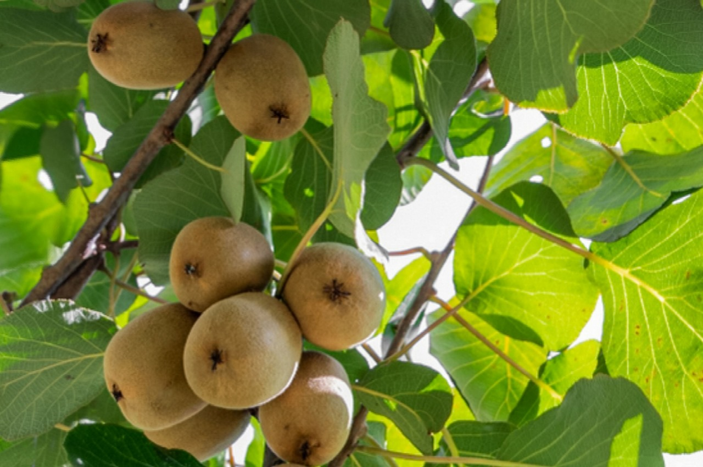
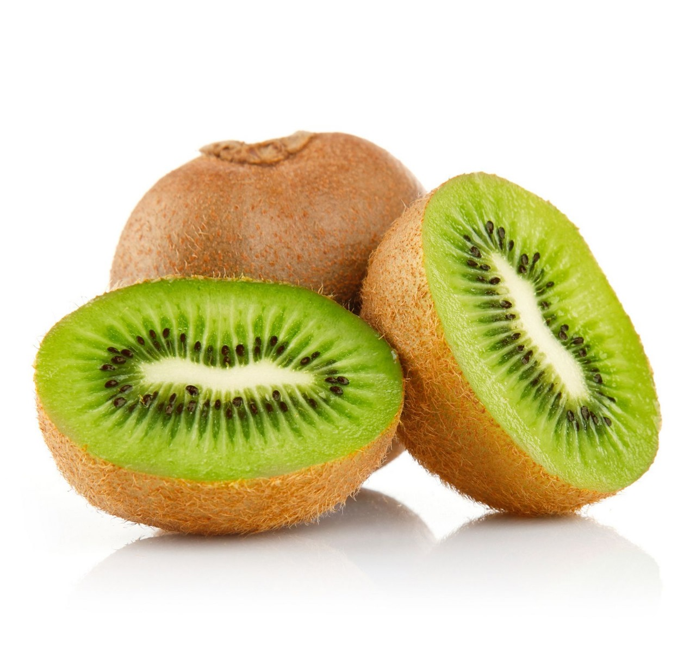
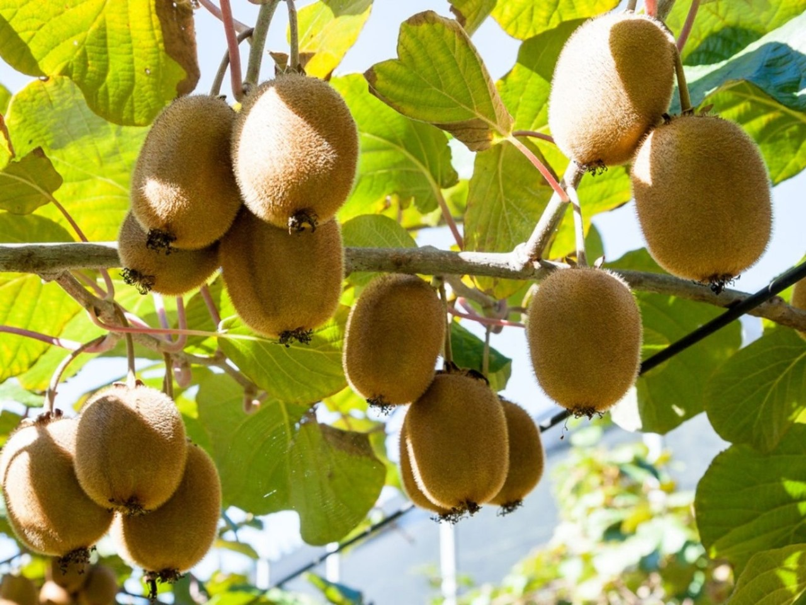

kiwis are natural soucre of vitamins.



Kiwifruit also known simply as kiwi, is a delicious and nutritious fruit native to China. It is well-known for its vibrant green flesh and unique flavor. Kiwifruit is a popular and nutritious fruit that thrives in temperate climates. Cultivating kiwifruit requires attention to soil conditions, climate requirements, proper planting techniques, and care practices. With the right conditions and care, kiwifruit plants can yield delicious fruits for many years.
Kiwi plants prefer well-drained, fertile soils with a slightly acidic to neutral pH level ranging from 5.5 to 7.5.
Sandy loam or loamy soils rich in organic matter are ideal.
Good drainage is crucial to prevent waterlogging, as kiwi roots are susceptible to rot in waterlogged conditions.
* Climate: Kiwi plants thrive in temperate to subtropical climates with moderate temperatures.
They require a chilling period during winter for dormancy and subsequent flowering.
Ideal temperature ranges for kiwi cultivation are between 10°C to 30°C.
High humidity during the growing season is also beneficial, but good air circulation helps prevent fungal diseases.
* Sunlight: Kiwi plants require ample sunlight to produce fruit.
They prefer full sun exposure for at least 6 to 8 hours a day.
However, in hot climates,
some partial shade during the hottest part of the day can help protect the plants from sunburn.
* Selecting Varieties:
Choose kiwi varieties that are well-suited to the Indian climate.
Look for cultivars that are tolerant of the temperature and humidity conditions in your region.
Some commonly grown varieties in India include Hayward, Allison, Bruno, and Monty.
* Site Selection:
Choose a planting site that receives full sun for at least 6 to 8 hours a day.
Ensure the site has well-drained soil with a pH level between 5.5 to 7.5.
Kiwi plants prefer slightly acidic to neutral soil.
Avoid waterlogged or excessively sandy soils.
* Preparing the Soil:
Prepare the planting area by digging a large hole approximately 2-3 times the size of the root ball of the kiwi plant.
Incorporate organic matter such as compost or well-rotted manure into the soil to improve fertility and drainage.
* Planting:
Plant kiwi vines in early spring or late fall when the weather is mild and the plants are dormant.
Space the kiwi plants approximately 10 to 12 feet apart to allow for proper air circulation and vine growth.
If you're planting both male and female vines, ensure proper spacing to facilitate pollination.
* Support Structure:
Install a sturdy support structure such as a trellis or pergola for the kiwi vines to climb.
Ensure the support system is strong enough to bear the weight of mature vines laden with fruit.
Training the vines onto the support structure early on will help establish the desired growth pattern.
* Watering:
Provide ample water to newly planted kiwi vines to help establish their root systems.
Water deeply but infrequently, allowing the soil to dry out slightly between waterings.
Once established, kiwi plants have moderate water requirements, but they may need additional irrigation during dry periods.
* Mulching:
Apply a layer of organic mulch such as straw or wood chips around the base of the kiwi plants to help retain moisture, suppress weeds, and regulate soil temperature.
Maintain a mulch layer of 2-4 inches thick, keeping it several inches away from the base of the vines to prevent rot.
* Fertilizing:
Fertilize kiwi plants regularly with a balanced fertilizer to provide essential nutrients for growth and fruit production.
Apply fertilizer in early spring before new growth begins and again in late spring or early summer.
Follow the manufacturer's recommendations for dosage and application frequency.
Irrigation is provided during September-October when the fruit is in the initial stage of growth and development.
Irrigation at 10-15 days interval has been found to be beneficial.
Provide ample water to newly planted kiwi vines to help establish their root systems.
Water deeply but infrequently, allowing the soil to dry out slightly between waterings.
Once established, kiwi plants have moderate water requirements, but they may need additional irrigation during dry periods.
A fertilizer dose of 20 kg. farmyard manure (the basal dose), 0.5 kg NPK mixture containing 15% N is recommended for application every year.
After 5 years of age, 850- 900 g. N. 500 600 g. P, 800-900 g. K and farmyard manure should be applied every year
Kiwi requires high Cl because its deficiency adversely affects the growth of shoot and roots.
In contrast, excess levels of B and Na are harmful.
The N fertilizer should be applied in two equal doses,
half to two-thirds in January February and the rest after fruit set in April-May.
In young vines, the fertilizer is mixed in the soil within the periphery of the vine,
and for the matured vine it is broadcast evenly over the entire soil surface
Kiwi vine starts bearing at the age of 4-5 years while the commercial production starts at the age of 7-8 years.
The fruits mature earlier at a lower altitude and later at high.
altitudes because of variation in temperature.
Large sized berries are harvested first while smaller ones are allowed to increase in size.
After harvesting, the fruits are rubbed with a coarse cloth to remove stiff hairs found on their surface.
Hard fruits are transported to the market. Subsequently, they lose their firmness in two weeks and become edible